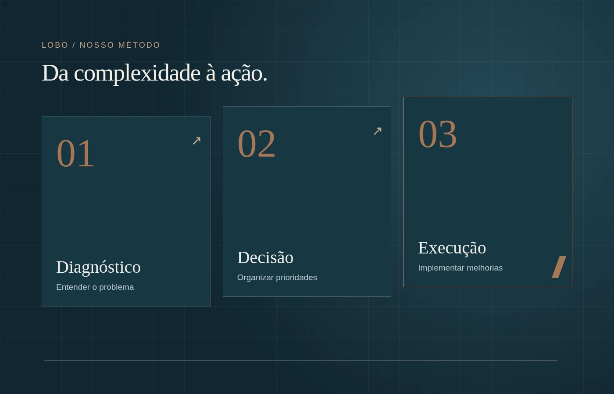

Sobre nós / Lobo Analytics & Business
Complexidade em clareza.
O mundo dos negócios está em constante transformação. Novas tecnologias, inteligência artificial e automação estão mudando a maneira como as empresas operam, competem e crescem. Mas, em meio a tantas possibilidades, o que realmente importa para o seu negócio?

Visual demonstrativo · Lobo Analytics & BusinessSobre a Lobo
Em um ambiente incerto, trazemos clareza e desempenho.
A Lobo Analytics & Business surge nesse cenário. Identificamos os obstáculos que limitam o crescimento da sua empresa, definimos prioridades e executamos melhorias com resultados mensuráveis.
Transformamos complexidade em clareza. E clareza em ação.
Missão
Transformar empresas por meio da aplicação estratégica de dados e inteligência artificial, convertendo desafios de negócio em resultados concretos e mensuráveis.
Visão
Construir uma nova referência em consultoria empresarial no Brasil, unindo inteligência de negócios, inovação tecnológica e excelência na execução.
Nossos valores
Como escolhemos trabalhar.
Excelência e compromisso com o cliente
Entendemos o negócio, antecipamos necessidades e propomos soluções que realmente agreguem valor.
Integridade e inteligência de negócio
Recomendamos o que faz sentido para o cliente, não o que gera o maior contrato.
Compromisso com resultados
Medimos, investigamos e assumimos responsabilidade pelo impacto do nosso trabalho.
Inovação com responsabilidade
Aprendemos e experimentamos com transparência sobre riscos e limitações.
Respeito e crescimento coletivo
Compartilhamos conhecimento e valorizamos a colaboração acima do ego.
Nossa abordagem
Da compreensão à ação.
Um método para reduzir a incerteza, orientar investimentos e implementar melhorias.
Investigamos a operação e o problema que motivou a conversa. Identificamos causas e oportunidades.
Apresentamos opções, indicadores e prioridades. A recomendação é técnica; a decisão é do cliente.
Implementamos soluções, treinamos os responsáveis e medimos resultados técnicos e de negócio.